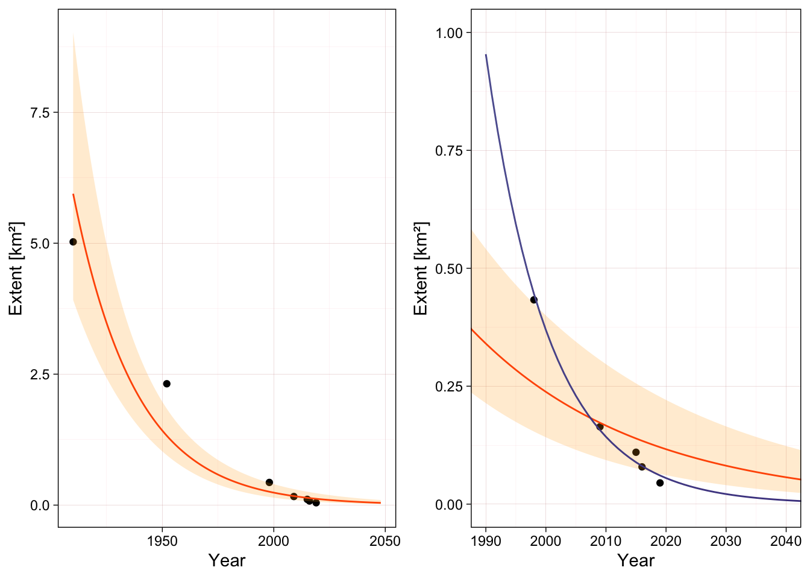

| Year | Nr. of units | Extent (km^2) | S.E. (km^2) | Sources |
|---|---|---|---|---|
| 1910 | 3 | 5.026 | 0.120 | reinterpretation of maps |
| 1952 | 3 | 2.317 | 0.060 | aerial photo 1:20000 |
| 1998 | 2 | 0.433 | 0.028 | aerial photo 1:20000 |
| 2009 | 1 | 0.164 | 0.019 | satellite image 2.5m |
| 2015 | 1 | 0.110 | 0.005 | satellite image 1m |
| 2016 | 1 | 0.079 | 0.005 | satellite image 1m |
| 2019 | 1 | 0.045 | 0.004 | field GPS and drone image |
7 Risk assessment
7.1 Criterion A
Cartographic estimates of glacier extent were reviewed by Ramírez et al. (2020) for three peaks in the Cordillera de Mérida (Bolívar, Concha and Humboldt, Figure 2.1).
For this assessment we added the values of these three peaks and calculated their standard errors (Table 7.1).
For calculations we assume that the threshold of collapse is when the glacier extent reduces to zero \(km^2\) (absolute threshold).
Subriterion A1
There is no direct estimate of decline in extent for the last 50 years, but calculations of rates of decline from selected rows of Table 7.1 can be used as minimum and maximum bounds:
| start date | end date | time frame | decline | S.E. |
|---|---|---|---|---|
| 1952 [year] | 2019 [year] | 67 [year] | 98.05783 [%] | 0.1798137 [%] |
| 1998 [year] | 2019 [year] | 21 [year] | 89.60739 [%] | 1.1489117 [%] |
The decline in the last 50 years is estimated to be between 89 and 98%, both estimates meet the threshold for Critically Endangered for subcriterion A1.
Subriterion A2
We used the data from Table 7.1 above to extrapolate the expected rate of decline for a 50 year period including the present and future (subcriterion A2b).
Using fixed proportional rates of decline
The proportional rate of decline can be calculated analytically using two reference points in time. Here we apply the formula: \[ \mathrm{PRD} = 100 \times (1-(\frac{A_2}{A_1})^{\frac{1}{t_2-t_1}}) \]. Where \(A_1\) is the extent in the start year \(t_1\), and \(A_2\) is the extent in the end year \(t_2\). We also calculate uncertainty using an error propagation formula based on the standard error of the measurements as reported by the original source.
For example, the proporional rates of decline based on the observed decline in the last 67 or 21 years are:
| start date | end date | time frame | PRD | S.E. |
|---|---|---|---|---|
| 1952 | 2019 | 67 | 5.713 | 0.130 |
| 1998 | 2019 | 21 | 10.220 | 0.473 |
We can project the future extent (\(\hat{A_2}\)) using a initial value (\(A_1\)) and assuming a constant PRD over \(n\) years:
\[ \hat{A_2} = A_1 \times (1-(\mathrm{PRD}/100))^n \].
For example, using the two estimates of PRD calculated above using two different starting points:
| Year | Extent (km^2) | S.E. (km^2) | Sources |
|---|---|---|---|
| 1998 | 0.433 | 0.028 | aerial photo 1:20000 |
| 2048 | 0.023 | 0.002 | Projected using PRD = 5.71 |
| 2048 | 0.002 | 0.001 | Projected using PRD = 10.22 |
And we can now calculate the projected decline for the 50 years period:
| start date | end date | time frame | decline | S.E. |
|---|---|---|---|---|
| 1998 [year] | 2048 [year] | 50 [year] | 94.72039 [%] | 0.6114850 [%] |
| 1998 [year] | 2048 [year] | 50 [year] | 99.54410 [%] | 0.1272629 [%] |
Regression of proportional rates of decline
An alternative approach is to use a generalised linear regression framework. This allows to use all available measurements to estimate the value of PRD using maximum (quasi-)likelihood.
We fitted a generalised linear model with quasi-poisson distribution and logarithmic link function, and weighted observations by the inverse of the standard error of the measurements. We used the model to predict expected values of extent and standard errors for the time frame 1990 to 2040, and then derived the back-transformed best estimate and 90% confidence intervals considering over-dispersion and a normal approximation of the error distribution.

A model fitted using all observations from 1910 onwards suggests a large proportional rate of decline ( Figure 7.1; left panel), but the most recent observation clearly deviate from the expected values (Figure 7.1; right panel, see Ramírez et al. (2020)). Another model fitted only to the most recent observations (1998 onwards), predicts a more pronounced decline, with narrower confidence intervals due to the small number of observations used .
Here we transform the model parameter to the percentage scale of the PRD formula and calculate the magnitude of the decline for the period 1998 to 2048, we also include the lower and upper bounds of the 90% C.I.):
| PRD | PRD lower | PRD upper | decline | decline lower | decline upper |
|---|---|---|---|---|---|
| 3.576 | 2.903 | 4.298 | 83.267 | 76.996 | 87.828 |
| 9.497 | 7.914 | 11.063 | 99.133 | 99.116 | 99.151 |
These values of PRD and the projected decline are lower than those obtained using the fixed PRD formula. This is because the linear model approach averages the rate of decline across all measurements, and probably underestimates or underplays the recent acceleration of the rate of decline (Ramírez et al., 2020). The model giving a value of \(PRD < 4.5%\) is heavily influenced by the older observations and does not match the more recent measurements. We decided to discard it in favor of the alternative model and analytical estimates.
Additional considerations
Both projections based on analytical and linear regression estimates of the proportional rate of decline suggest declines above 80% in a 50 years time frame including past and future. Some estimates are close to 100%, indicating a likely collapse.
Given the very rapid decline of the glacier in the Bolívar Peak between 1998 and 2017, and the comparable size of the Humboldt glacier at the time of the last measurement (0.045 \(km^2\) by 2019) it is reasonable to expect that it would disappear completely within the next 20 years.
Assigned category
The assessment unit is classified as Critically Endangered, with plausible bounds between Endangered and Collapsed: CR (CR-CO).
Subriterion A3
The decline between the oldest and the most recent estimates of extent in Table 7.1 is estimated as:
| start date | end date | time frame | decline | S.E. |
|---|---|---|---|---|
| 1910 [year] | 2019 [year] | 109 [year] | 99.10466 [%] | 0.08240714 [%] |
Reconstruction of the historical evolution of glaciers in South America suggests that the maximum glacial extent in Venezuela occurred around the year 1730 and glaciers retreated continuously in the following centuries with only minor readvances around 1760, 1820 and 1880 (Polissar et al., 2006; Jomelli et al., 2009). Thus we can assume that the observed decline between 1910 and the present represents a lower bound of the total decline between 1750 and the present.
For subcriterion A3 we can assume that the historical decline in extent is >99 %, thus the Tropical glacier ecosystems of the Cordillera de Merida are considered Critically Endangered with high risk of imminent Collapse: CR (CR-CO).
7.2 Criterion B
Spatial data is sufficient for estimation of extent of occurrence (EOO) and area of occupancy (AOO), thus we will assess the quantiative subcriteria B1 and B2 instead of the qualitative subcriterion B3.
For the assessment of subcriteria B1 and B2 we considered that three conditions are met:
- there is an observed continuing decline in spatial extent (Ramírez et al., 2020),
- there is an inferred threatening process that is likely to cause continuing declines in geographic distribution within the next 20 years (Braun & Bezada, 2013), and
- the ecosystem exists at only one threat-defined location.
Subcriterion B1
The extent of occurrence (EOO) was calculated as the area of the convex hull around the glacier outlines from the RGI 6.0 database (Randolph Glacier Inventory Consortium, 2017). The EOO for the outline corresponding to the Humboldt Peak is 0.892 \(km^2\) and for all outlines together including the collapsed glaciers and other associated areas (proglacial waters and glacier forefield) is 5.957 \(km^2\). Both estimates are below the threshold of 20000 \(km^2\).
The ecosystem is Critically Endangered under subcriterion B1a(i)bc
Subriterion B2
The main occurrences of known glaciers (extant and collapsed; but excluding the historical occurrence of Mucuñuque peak) occupy one 10x10 km cell Figure 2.1. This cell very likely contains all occurrences of associated habitats with connected microbiota (proglacial waters and glacier forefield).
The ecosystem is Critically Endangered under subcriterion B2a(i)bc
7.3 Criterion C
Subcriterion C1
Braun & Bezada (2013) compared the freeze level height (FLH in meters) from climate reanalysis data in the Cordillera de Merida for the period 1948 to 2011. We use this time series and fit a local polynomial regression (loess with gaussian distribution, span = 0.75 and degree = 2, equivalent number of parameters = 4.35) to smooth the temporal trend and compare these values with the altitudinal range of glaciers for each peak as reported by , Figure 7.2.
In the case of Pico La Concha the glacier ice had an estimated maximum elevation of 4840 m in the year 1952, and disappeared before 1998. The mean FLH was almost 10 meter below the maximum elevation in 1948 and rose to more than 83 meters above the maximum elevation in 2010. The smoothed FLH mean surpassed the 4840 m threshold between 1972 and 1981.
For the assessment of the risk of collapse of the last remaining glacier in peak Humboldt we use the values of the smoothed FLH to calculate initial and final values of the time series and assume that the collapse value for the FLH is between the maximum elevations of the glaciers in the peaks Bolívar and Humboldt (between 4920 and 4970 m).
| start date | end date | period | Collapse value | observed | maximum | RS | S.E. |
|---|---|---|---|---|---|---|---|
| 1960 | 2010 | 50 | 4920 | 94.62787 | 90.67025 | 104.36486 [%] | 28.29773 [%] |
| 1960 | 2010 | 50 | 4970 | 94.62787 | 140.67025 | 67.26929 [%] | 18.49025 [%] |
Relative severity was calculated as 67 and 100 % (observed decline higher than maximum decline) for these collapse values, but the large standard error of the estimate suggest large uncertainty due to the wide variation of the time series. Thus we adopt a best estimate of 83.6% and a plausible range of 48 to 100%.
The subcriterion C1 is assessed as Critically Endangered with a plausible range from Vulnerable to Collapsed: CR (VU-CO).
Subcriterion C2a
For Criterion C we analysed the potential effect of climate change on the suitability of bioclimatic conditions for the presence of Tropical glacier ecosystems. We used a Gradient Boosting Machine (GBM) model to analyse the current climatic conditions in areas occupied by Tropical glacier ecosystems in all the tropics. Details of the model fitting and validation process are in preparation (Ferrer-Paris & Keith, n.d.), brief summary follows.
Occurrence records were selected using stratified random sampling from all the glacier outlines in tropical areas and 25 km distance buffers around glacier outlines. We applied a first partition of the data by withhold the occurrence records of the target assessment unit for final model evaluation of prediction performance of the model (target partition) and the rest of the occurrence records were used for model fitting (modeling partition). Random subsets of the modeling partition were divided in calibration (80%) and test partitions (20%) for tuning of model parameters (number of trees, interaction depth, shrinkage and minimum number of observations per node) using cross validation.
We used 19 bioclimatic variables from the CHELSA dataset representing climatological mean values for present conditions (1981-2010) as predictor variables (Karger et al., 2017). Variables were centered and scaled to zero mean and unit variance.
We fitted the GBM model for classification (two classes: glacier or not-glacier) using a bernoulli error distribution. The best performing model had following parameters:
| n.trees | interaction.depth | shrinkage | n.minobsinnode |
|---|---|---|---|
| 200 | 5 | 0.1 | 12 |
And predictive performance on the training dataset:
| ROC | Sens | Spec | ROCSD | SensSD | SpecSD |
|---|---|---|---|---|---|
| 0.9671479 | 0.6214764 | 0.9813436 | 0.0084269 | 0.0581879 | 0.0047307 |
We also evaluated the predictive performance of the final model on the Cordillera de Merida:
| ROC | Sens | Spec |
|---|---|---|
| 0.990099 | 0.6666667 | 0.9960396 |
We used the final fitted model to predict the suitability in the present timeframe (1981-2010) and future timeframes (2011-2040 and 2041-2071). We considered uncertainty due to climate change projections (five general circulation models and three representative pathways), and due to the choice of optimal cut-off values of the confusion matrix of observed classes (glacier/non-glacier) vs. predicted suitability score. We selected thresholds of maximum accuracy (acc) and equal sensitivity and specificity (ess).
We summarised the outcomes for each combination of models, pathways and cut-off values and calculated relative severity for each of the three cells overlapping with current glacier outlines (Figure 7.3). Here we assume that the predicted suitability represent the initial and final value and the cut-off value represents the collapse threshold (transition from Glacier to Non-glacier class).
The best estimate of mean relative severity across all predictions is 97.1 % with a 90% confidence interval of 63.2 to 100%.
The subcriterion C2a is assessed as Critically Endangered with a plausible bound of Endangered to Collapsed: CR (EN-CO)
Subcriterion C3
Polissar et al. (2006) used the equilibrium-line altitude (ELA; the elevation of the dividing line between the glacier accumulation and ablation areas) as a climatically sensitive measure of variations in glacier extent.
They first reconstructed the Mucubají valley paleoglacier topography from field data, aerial photographs, and topographic maps. They used this information to construct a normalized cumulative area vs. elevation profile and the ratio of accumulation area to total glacier area. This correspond to the period of maximum glacier extent between 1180 and 1820. Similarly, they calculated the cumulative elevation profiles of modern glaciers at the Pico Bolívar from existing maps of the year 1972. They compared the ratio of accumulation area to total glacier area to determine the respective ELA for both cases and provide estimates of their difference (\(\Delta\) ELA).
The \(\Delta\) ELA was calculated between -300m for the timeframe of the analysis (1820 to 1972) and -500 m considering the observed declines after 1972 and before 2006. This last value is considered to be near to the maximum possible value of \(\Delta\) ELA.
Using three plausible values of \(\Delta\) ELA (-300, -400 and -500 m) as the observed decline and a value of -550 m as the maximum decline we calculate that the relative severity is between 54 % and 90 %, with a middle value of 72.3%.
Subcriterion C3 is assessed as Endangered with a plausible bound from Vulnerable to Critically Endangered: EN (VU-CR).
7.4 Criterion D
The biota of this assessment unit is poorly known, and there is no direct information on temporal changes in microbial communities in the different habitats after the loss of the ice substrate. Data collected at Humboldt peak in 2019 and 2021 may shed light on this issue. Analysis is still underway (Huber et al. in prep.).
The study of the glacier forefield at Humboldt peak provide a post-glacial chronosequence: vascular vegetation is already present after 10 years of the glacier retreat, and soil properties change significantly after 21 and 60 years (Llambí et al., 2021).
Criterion D is evaluated as Data Deficient.
7.5 Criterion E
We use ice mass balance projections for the glacier of the Cordillera de Mérida based on a glacier evolution model (Rounce et al., 2023). This hybrid model combines a mass balance module and a glacier dynamics module to model glaciers independently from 2000-2100 for various ensembles of Global Circulation Models and scenarios.
According to the published methods (Rounce et al., 2023):
The model computes the climatic mass balance (i.e., snow accumulation minus melt plus refreezing) for each surface elevation bin using a monthly time step. The model computes glacier melt using a degree-day model, accumulation using a temperature threshold, and refreezing based on the annual air temperature. Glacier geometry is updated annually using a flowline model based on the Shallow-Ice Approximation to explicitly account for glacier dynamics using a density of 900 kg m-3 for converting mass to volume.
This hybrid model is applied to all glaciers in the world independently, using globally available datasets of glacier outlines (Randolph Glacier Inventory Consortium, 2017), glacier-wide geodetic mass balance data and regional ice volume estimates for calibration (Farinotti et al., 2019; Hugonnet et al., 2021). In the case of small regions with no direct measurements (like the Cordillera de Mérida) the model uses initial estimates of ice volume based on digital elevation models and most likely overestimates initial mass, making the projections very conservative (Rounce et al., 2023).
The values used here are the output values (ice mass median absolute deviation) of the model for the four glacier outlines of the Randolph Glacier Inventory for the cordillera de Mérida downloaded from Rounce et al. (2022) and presented in Figure 7.4. These values clearly overestimate the existing ice mass but we focus the analysis on the point of collapse and not on the mass value per se.
We use these mass projections to estimate the year of collapse (first year when mass reaches zero) for each combination of models and scenarios. The empirical cumulative distribution function of the year of collapse (Figure 7.5) allow us to estimate the proportion of models indicating collapse for each year.
Focusing on the 50 year time frame between 2020 and 2070 we find that 79.2 % of the models end in collapse. Uncertainty in mass estimates (mean absolute deviation) do not have a major effect on the estimated year of collapse. Considering each scenarios separately, the proportion of models that predict collapse by 2070 is higher than 50% (threshold for CR) in all cases, except for scenario SSP1-2.6.
Criterion E is evaluated as Critically Endangered.